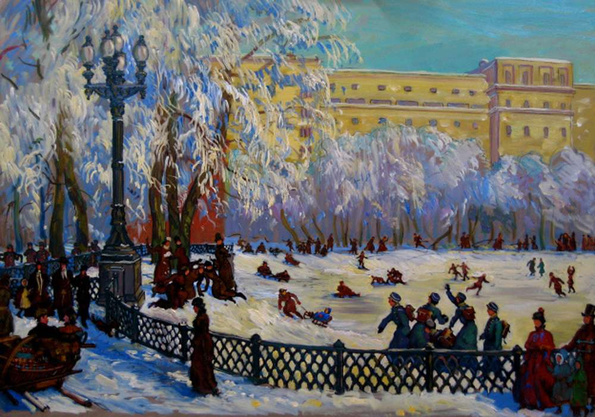

Патриаршие пруды
Патриаршие пруды — общее название местности, расположенной в Пресненском районе Центрального административного округа города Москвы, куда входят пруд, сквер и микрорайон. Микрорайон находится вблизи Садового кольца между Малой Бронной улицей, Большим Патриаршим, Малым Патриаршим и Ермолаевским переулками. Парковый комплекс занимает 2,2 гектара, из которых дорожкам и площадкам отведено 6323 м², а зелёным насаждениям — 7924 м². Площадь пруда 9900 м², его глубина достигает 2,5 метров.

Ежегодно на Патриарших прудах устраивают большой каток общей площадью 12 тыс. м², где работает прокат коньков. Такая традиция ведётся с 1900 года, ещё Лев Толстой приводил сюда дочерей. Вечером каток освещают 16 прожекторов, которые могут проецировать на лёд изображения цветов и снежинок.
Патриаршие пруды служат площадкой для городских праздников: дня города, масленичных гуляний и фестивалей. На Патриарших прудах проводятся Булгаковские вечера, где также проходит букинистическая ярмарка.
В 2013 году на Патриарших прудах прошла фотовыставка «Лесные истории. Осень» работ призёров российских и международных фотоконкурсов. В том же году в рамках «Ночи искусств» на Патриарших прудах транслировали радиоспектакль первой главы «Мастера и Маргариты» и была организована встреча с озвучившими его актёрами — Игорем Костолевским, Максимом Сухановым, Игорем Ясуловичем и Александром Феклистовым.
С 2013 года на Патриарших прудах проходит ежегодный благотворительный забег #ПатрикиБегут. Все собранные средства идут в поддержку благотворительного фонда помощи детям с органическими поражениями ЦНС «Галчонок».
В 2014 году на Патриарших прудах прошёл цветочный фестиваль с мастер-классами по флористике и концерт «Музыка на воде», где выступил оркестр «Персимфанс», а также солистка Московского музыкального театра Хибла Герзмава.
В 2016 году на Патриарших прудах устраивали Булгаковский фестиваль, приуроченный к 125-летию со дня рождения автора.